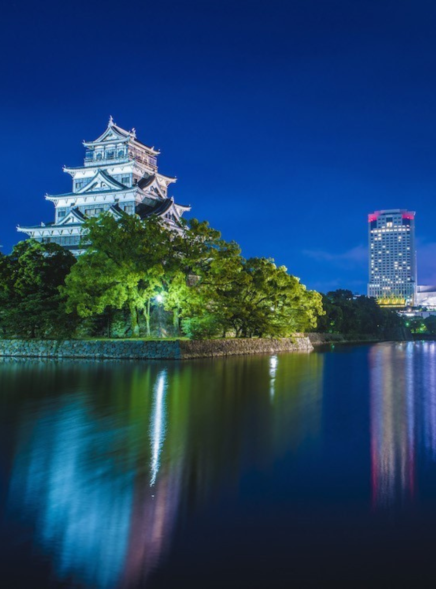

Home
Culture /
歴史的な名所
歴史的な名所
岡山城や古刹をめぐり、時を超える建築と物語に触れる。
About
名城・名刹・庭園などの文化財を訪ね、保存に配慮した見学マナーで 静かな時間を楽しみます。
Highlights
天守・石垣・濠などの歴史的意匠
朝の散策と写真スポット
周辺の茶屋で一服（リユース/リフィル推奨）

Access / Map
Back to Home
Contact